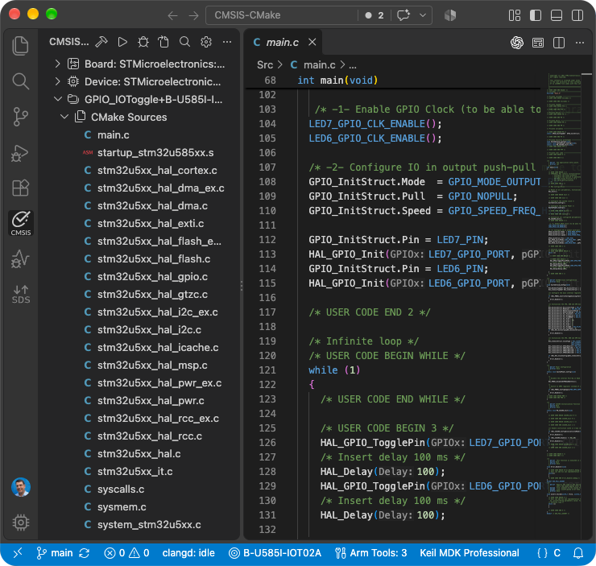
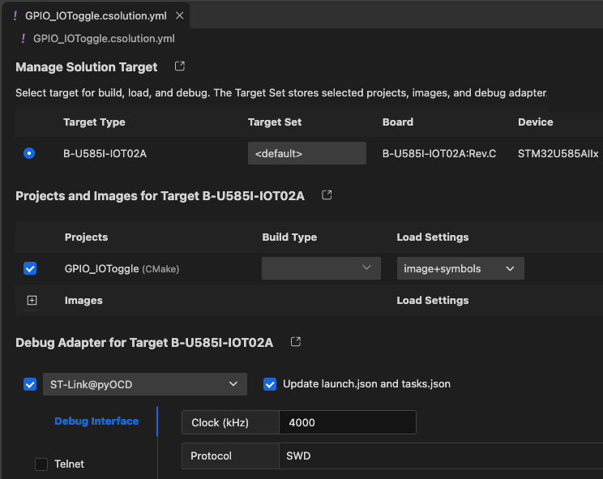

Work with native CMake applications
It is possible to build and debug native CMake applications with Keil Studio. The CMSIS view displays an outline of the native CMake project.

The Manage Solution target dialog can still be used to select the target for build, load, and debug.

Prerequisites
Make sure that your vcpkg_configuration.json file contains an entry for CMake and Ninja (and a compiler toolchain):
{
"registries": [
{
"name": "arm",
"kind": "artifact",
"location": "https://artifacts.tools.arm.com/vcpkg-registry"
}
],
"requires": {
"arm:tools/kitware/cmake": "4.3.3",
"arm:tools/ninja-build/ninja": "1.13.2",
"arm:compilers/arm/arm-none-eabi-gcc": "15.3.1"
}
}
Settings
Copy the CMake application directory that you want to use to your CMSIS solution workspace/folder. Refer to the example available on GitHub: CMSIS-CMake.
Csolution settings
Native CMake projects are listed under projects: in the *.csolution.yml file and use the solution's target-types:
and build-types:. Their declared output images are included in the generated *.cbuild-run.yml file and can
therefore be combined with images from other project contexts for programming and debugging.
The native project remains responsible for its CMakeLists.txt, toolchain setup, build targets, and generated files.
Paths under images: identify outputs relative to the native project's context output directory.
Example:
solution:
target-types:
- type: DualCoreDevice
device: Vendor::DualCoreDevice
projects:
- cmake:
source: ./core0
device: :Core0
images:
- image: build/core0.elf
type: elf